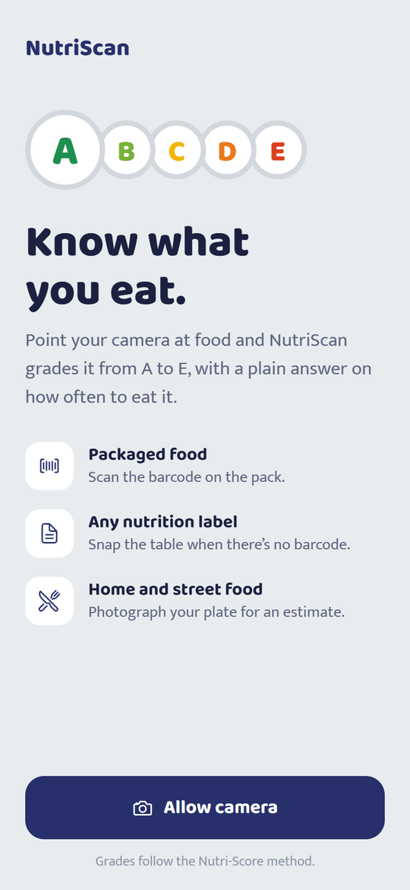
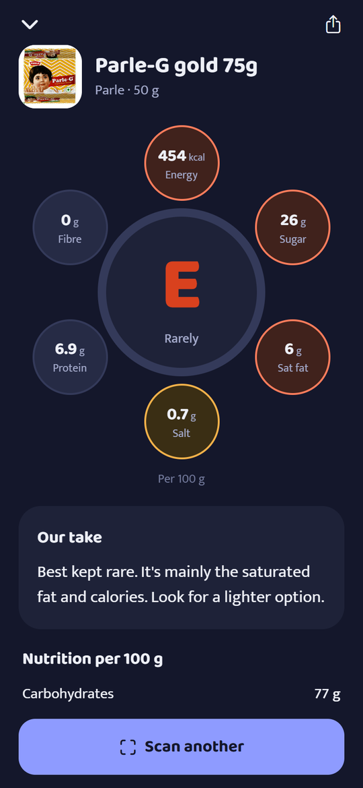
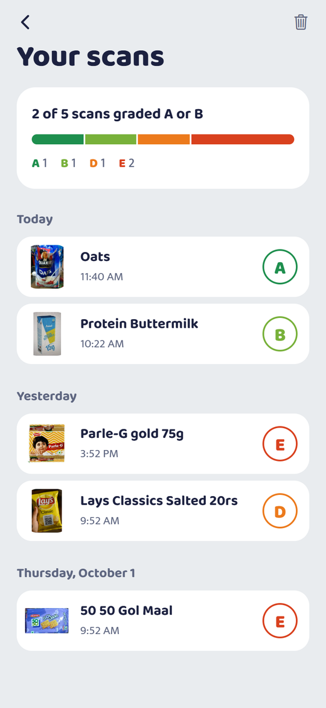

One letter, served on a plate
- A
Everyday food
- B
Good most days
- C
Fine in moderation
- D
Now and then
- E
Rarely
Grades follow the Nutri-Score method: sugar, saturated fat, salt and calories count against a food; fibre, protein, fruit and vegetables count for it. Around the plate, six bowls show each nutrient in green, amber or red.
Three ways to scan
Barcode
Packaged food in a second, from the free Open Food Facts database.
Nutrition label
No barcode, or the product isn’t listed? Snap the table on the pack and AI reads it.
Your plate
Vada pav, dosa, biryani or dal makhani: photograph it for an estimated grade.
A look inside



Share what you found
Tap share on any result to send a picture of the plate, with a short note and a lighter swap, to family on WhatsApp.
How to install
- On your Android phone, tap Download for Android.
- Open NutriScan.apk from your downloads. If Android asks, allow your browser to install unknown apps.
- Tap Install, open NutriScan and allow the camera.
Food photo grades are estimates from a typical recipe. Label and food photos need an internet connection; barcodes only need it for the lookup.
Privacy
No account, no ads, no tracking. Your scan history stays on your phone. Photos you scan are sent only to read the food, and aren’t stored by NutriScan. Privacy policy. Contact: reply2jhani@gmail.com